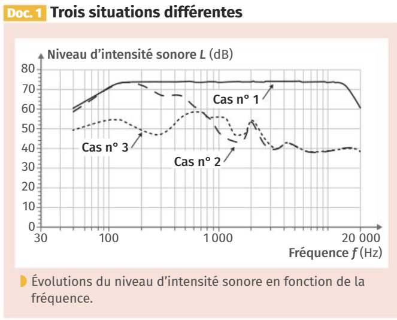
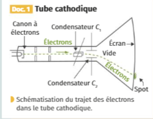
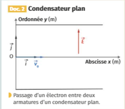

La réduction active de bruit consiste à supprimer le bruit résiduel dans les oreillettes per émission d’un signal appelé « anti-bruit ». Le Document 1 présente le niveau d’intensité sonore mesuré en fonction de la fréquence dans les situations suivantes :
sans casque (cas n°1)
avec casque en réduction passive (cas n°2)
avec casque en réduction passive et active (cas n°3)
Identifier approximativement les domaines de fréquence pour lesquels :
On mesure l’intensité sonore lorsque le bruit et l’anti-bruit sont émis simultanément dans trois situations (Document 2). Le niveau sonore du bruit et de l’anti-bruit lorsqu’ils sont émis seuls est de 50 dB.
Préciser dans quelle situation l’intensité sonore est la somme des intensités des sons pris séparément.
Déterminer la situation qu’il faut retenir pour le dispositif de réduction active de bruit.
Calculer l’atténuation associée.

Document 2 : Variation de l’intensité sonore
| Situation | a | b | c |
|---|---|---|---|
| Verrouillage de phase | Non | En phase | En opposition de phase |
| Niveau sonore (dB) | 53 \(\pm\) 1 | 56 \(\pm\) 1 | 44 \(\pm\) 1 |
Les deux parties de l’exercice peuvent être traitées
indépendamment
Partie 1 : Accélération
Avant le développement et la généralisation des écrans LCD, les
oscilloscopes, les écrans d’ordinateurs et les téléviseurs étaient
constitués d’un tube cathodique.
A la base du tube cathodique, un canon à électrons émet et accélère des
électrons en direction de l’écran. (Document 1).
Lors d’une première phase du trajet, les électrons passent entre deux
plaques verticales percées. Lors de cette phase, les électrons passent
d’une vitesse négligeable à une vitesse notée \(v_0\) par la suite.
Les deux plaques sont séparées d’une distance \(d\) = 5.0 cm et la tension aux bornes des plaques est de 200 V. Montrer que le champ électrique régnant entre les deux plaques a une valeur absolue de 4.0E3 V m−1.
Montrer que le poids de l’électron est négligeable par rapport à la force électrique qu’il subit.
Calculer le travail de la force électrique appliquée sur la distance \(d\).
Utiliser le théorème de l’énergie cinétique pour déterminer la valeur de la vitesse de l’électron à la sortie des plaques.
Partie 2 : Déviation
Suite à cette accélération, les électrons passent à l’intérieur de deux
condensateurs plans \(C_1\) et \(C_2\) chargés qui permettent de dévier les
électrons horizontalement (\(C_1\)) et
verticalement (\(C_2\)).
En fin de course, les électrons impactent l’écran sur lequel est déposée
une couche électroluminescente.
On étudie la déflexion dans le condensateur \(C_2\).
L’électron pénètre dans le condensateur \(C_2\) avec une vitesse horizontale \(\vec{v_0}\) (Document 2). Représenter la force électrique \(\vec{F_e}\) subie.
En considérant que \(\vec{F_e}\), les équations horaires sont : \[\left\lbrace \begin{array}{l} x(t) = v_0 \cdot t \\ y(t) = - \frac{1}{2}\cdot \dfrac{e\cdot E}{m} \cdot t^2 \end{array} \right \rbrace\]
Déterminer l’équation de sa trajectoire et sa nature.
Préciser le mouvement de l’électron après sa sortie du condensateur.


Données :
Masse d’un électron : \(m_{\ce{e-}}\) = 9,11E-31 kg
Intensité de pesanteur : \(g\) = 9.81 N kg−1
Charge élémentaire : \(e\) = 1,60 E-19 C